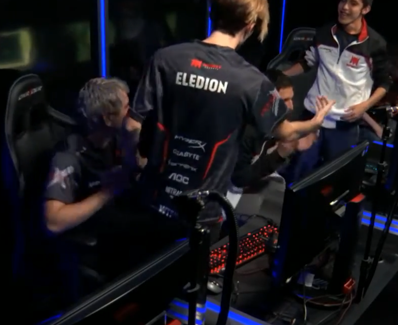
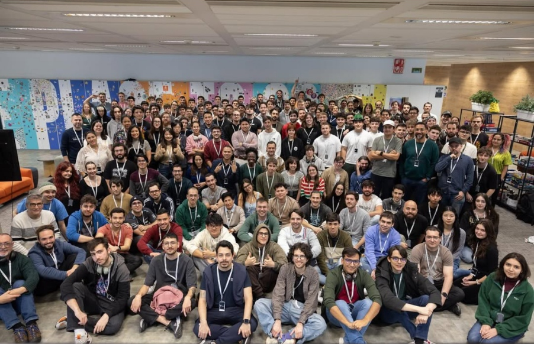

My path into engineering wasn't linear. For a decade, I competed in environments where making fast decisions under pressure was a daily requirement. That mindset naturally drew me toward systems engineering: understanding how things work under the hood, finding where they break, and building them to be resilient.

For five years, I competed professionally in League of Legends as eledion across LLN (Latin America) and Superliga (Spain). It required relentless match analysis and real-time execution under incomplete information.
Competing at the top level taught me to evaluate decision quality over short-term outcomes, while sharpening concise team communication under high pressure and constant change. It laid the foundation for dissecting complex failure modes with structured analysis.
Poker brought a different kind of competition: solo, probability-driven, and centered on strict risk management under incomplete data. It reinforced a core principle: a good decision doesn't always yield a good short-term outcome, and a bad outcome doesn't mean the decision was wrong.

I entered 42 School through the Piscine—a 26-day immersion bootcamp with zero lectures or manuals, spending 14-hour days debugging C scripts and peer-evaluating code in terminal environments.
Moving into the main curriculum meant working directly with low-level primitives: processes, memory allocation, signals, thread concurrency, sockets, and protocol handling. It built a hands-on mental model of how operating systems and networks behave when things break.
That low-level foundation naturally led me to infrastructure. I became fascinated with how systems surrounding applications are provisioned, monitored, scaled, and recovered—bringing the same low-level rigor to cloud architecture, operational resilience, and automated environments.
Today, I work at the intersection of systems, infrastructure, and cloud—turning complex failure modes into simpler, more reliable systems.